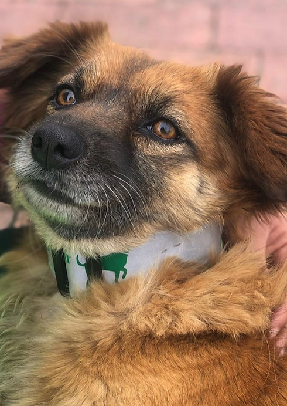

Para rescatistas
#RescatistaStarterPack
Agradecemos y admiramos el trabajo de todos los rescatistas. Por eso armamos un conjunto de herramientas que te va a permitir hacer un excelente proceso de adopción para el perrito o gatito que rescataste.
Si querés garantizar un buen futuro para el animal y contribuir de verdad en la lucha contra el abandono y el maltrato, es sumamente importante elegir una buena familia adoptante: una que se comprometa a cuidarlo y amarlo para toda su vida. Guiar e informar a esa familia sobre sus responsabilidades también es parte de tu trabajo como rescatista.

en condición vulnerable?
Tus herramientas
Todo lo que necesitás para adoptar bien al peludito que rescataste
Guía completa
El paso a paso completo para hacer un buen proceso de adopción: cómo evaluar candidatos, qué preguntar y cómo hacer el seguimiento.
Formulario de adopción
El formulario modelo que podés usar para conocer a fondo a cada familia interesada en adoptar antes de entregar al animal.
Contrato de adopción
Un contrato modelo para formalizar el compromiso de la familia adoptante con el cuidado del animal para toda su vida.
Solicitud de difusión
¿Necesitás ayuda para encontrarle familia al animal que rescataste? Pedinos que difundamos su caso en nuestras redes.
"Es sumamente importante elegir una buena familia adoptante: una que se comprometa a cuidar y amar al animal para toda su vida."
Seguimos en esto juntos